Large Language Models can produce fluent but unsupported answers, which is dangerous in settings where users need evidence-backed responses. We build a risk-adjusted hallucination detection pipeline that predicts whether a generated answer is unsupported by the provided evidence, calibrates that risk score, and abstains when risk is high. The detector combines four signals: token uncertainty, self-consistency disagreement, semantic entropy, and groundedness. We evaluate the full pipeline on two evidence regimes, PHANTOM and WikiQA, and we also test frozen transfer in both directions. The main result is that the standalone detector works best on PHANTOM, calibration and abstention are most useful on PHANTOM, and transfer fails in both directions because several uncertainty features change meaning across datasets while groundedness remains the most stable signal.
Given a question and evidence, we generate one served answer plus sampled answers, compute four features, train a lightweight detector, calibrate its risk score, and abstain on high-risk examples.
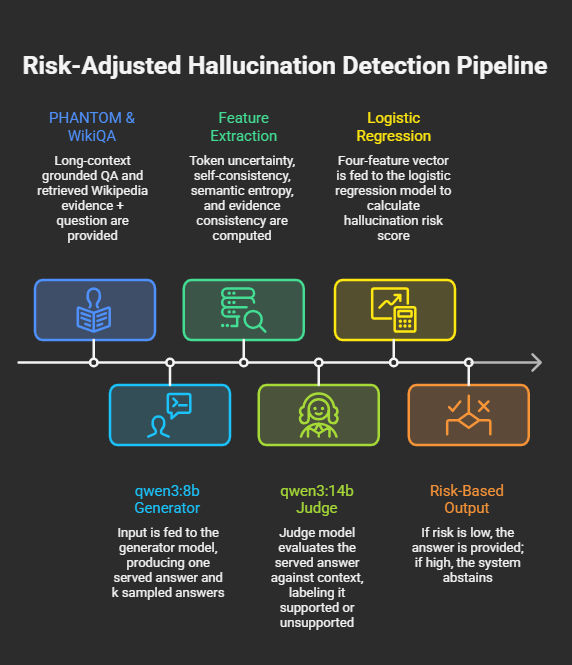
Inputs are question-context pairs from two regimes: PHANTOM long-context QA and WikiQA with retrieved Wikipedia evidence. For each example, qwen3:8b generates a served answer and k=5 sampled answers. We then compute token uncertainty, self-consistency disagreement, semantic entropy, and evidence consistency. Labels are produced by a stronger judge model, and groundedness is computed separately with NLI so the feature pipeline is not the same mechanism as the labeler. We train a logistic regression detector on the feature table, compare calibration methods, freeze the final detector bundle, and evaluate abstention and transfer.
What did you try to do? What problem did you try to solve?
We wanted to detect when an answer is unsupported by the evidence provided to the model, then use that score to avoid answering the riskiest cases. The project is about reliability, and raw answer generation quality.
How is it done today, and what are the limits of current practice?
Many hallucination detectors rely on one signal only, such as token confidence or external checking. That is often not enough. Some wrong answers are still low-uncertainty, and some uncertainty signals behave differently depending on the evidence regime. This makes single-signal methods brittle and makes transfer across datasets difficult.
Who cares? If you are successful, what difference will it make?
A useful risk score can make LLM systems safer by showing when they should answer and when they should abstain. This matters in domains where unsupported answers can cause harm or erode trust.
What did you do exactly? How did you solve the problem? Why did you think it would be successful?
We built a four-signal hallucination detector over a flat feature table:
These features are combined by a logistic regression detector that predicts evidence unsupportedness. We then compare calibration methods on validation, choose the best final calibrator for each dataset, freeze a risk threshold on validation, and evaluate abstention on a test set.
The final calibration choice is dataset-specific:
What problems did you anticipate? What problems did you encounter?
We expected distribution shift across evidence regimes. That is exactly what we found. The full standalone pipelines worked, but transfer in both directions was poor. The main issue was not just threshold mismatch. Several uncertainty features changed direction across datasets, which made the frozen source-domain detector unreliable on the target domain.
How did you measure success? What experiments were used?
We report AUROC, AUPRC, accuracy, precision, recall, and F1 for the standalone and transfer detectors. For calibration we report Expected Calibration Error and Brier score. For abstention we report coverage, abstention rate, selective risk, and selective accuracy, together with risk-coverage and accuracy-coverage curves.
Table 1 summarizes the final standalone results. AUROC, AUPRC, accuracy, precision, recall, and F1 come from the tuned detector reports. ECE, Brier, coverage, and selective accuracy come from the final calibrated abstention runs. The PHANTOM detector is the strongest success case. WikiQA still supports the full pipeline, but the detector is weaker, the learned weights are less intuitive, and the abstention gains are much smaller.
| Dataset | Final Calibrator | AUROC | AUPRC | Accuracy | Precision | Recall | F1 | ECE | Brier | Coverage at Frozen Point | Selective Accuracy |
|---|---|---|---|---|---|---|---|---|---|---|---|
| PHANTOM | Platt | 0.7730 | 0.6451 | 0.7591 | 0.6095 | 0.6667 | 0.6368 | 0.0734 | 0.1652 | 0.8185 | 0.7863 |
| WikiQA | Isotonic | 0.6927 | 0.3434 | 0.6837 | 0.4096 | 0.7234 | 0.5231 | 0.0725 | 0.1656 | 0.9643 | 0.7566 |
The strongest single positive result is PHANTOM. The full four-feature detector beats simpler baselines overall, the learned coefficients make sense, and abstaining on the riskiest cases improves the quality of retained answers from about 0.6832 at full coverage to about 0.7863 at the frozen operating point.
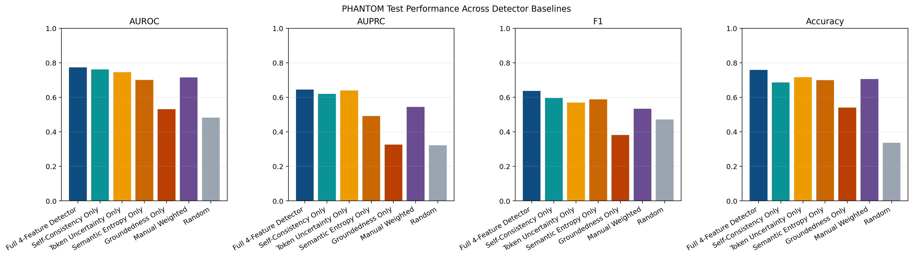
Figure 1 shows the PHANTOM baseline comparison. The full detector is strongest overall, and self-consistency disagreement is the strongest single feature. This supports the main in-domain claim that combining uncertainty and groundedness is more useful than relying on any one signal by itself.
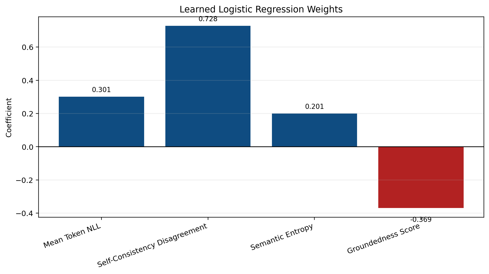
Figure 2 shows the learned PHANTOM coefficients. The signs are coherent: token uncertainty, self-consistency disagreement, and semantic entropy increase risk, while groundedness lowers risk. Self-consistency disagreement is the strongest warning signal on PHANTOM.
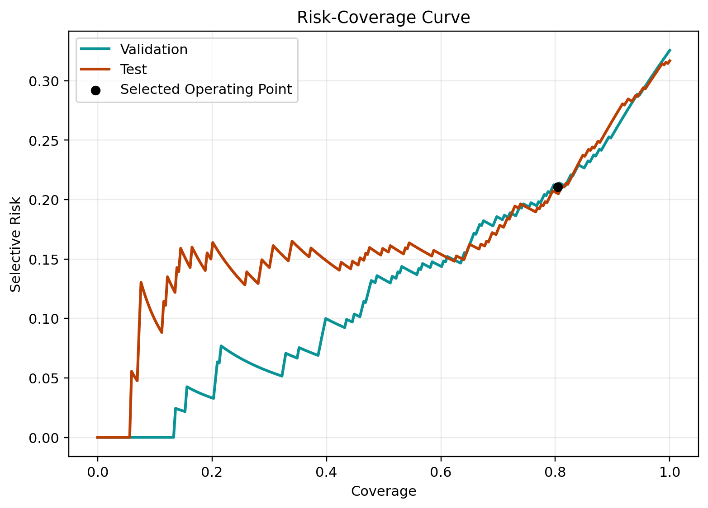
Figure 3 shows the PHANTOM risk-coverage curve. As coverage decreases, selective risk also decreases. In simple terms, when the detector rejects the riskiest PHANTOM cases, the remaining answered set contains a lower fraction of unsupported responses.
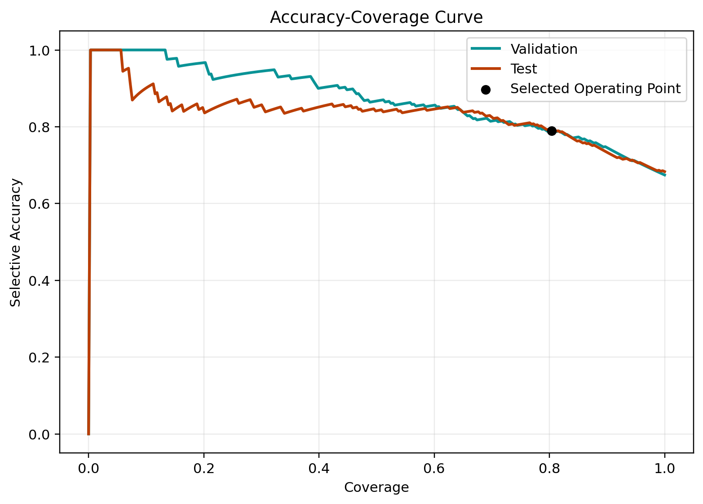
Figure 4 shows the PHANTOM accuracy-coverage curve. As the system abstains on more high-risk cases, the accuracy of the retained answers rises.
WikiQA is more mixed. The full pipeline still runs end to end, but the feature story is less clean, and the best final calibrator is different. On WikiQA, isotonic regression performs better than Platt scaling for the final calibration metrics.
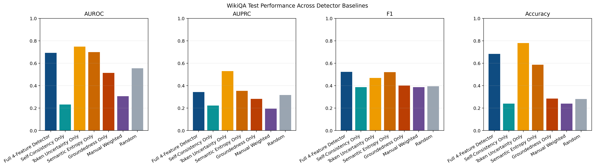
Figure 5 shows the WikiQA baseline comparison. Token uncertainty is the strongest single feature here, and the combined model does not show the same clean advantage seen on PHANTOM. That is one sign that WikiQA is the harder regime.
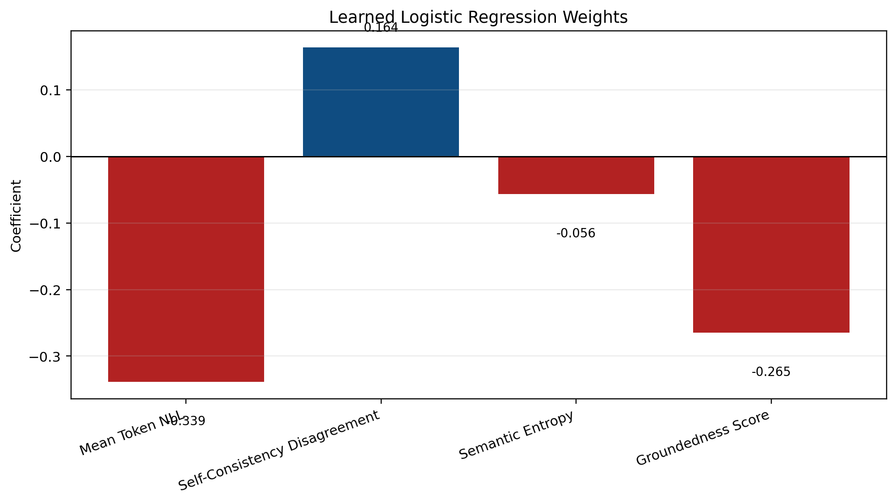
Figure 6 shows the WikiQA learned coefficients. Groundedness still lowers risk, but the uncertainty features are less stable than on PHANTOM. This is one reason the WikiQA result is weaker and more mixed.
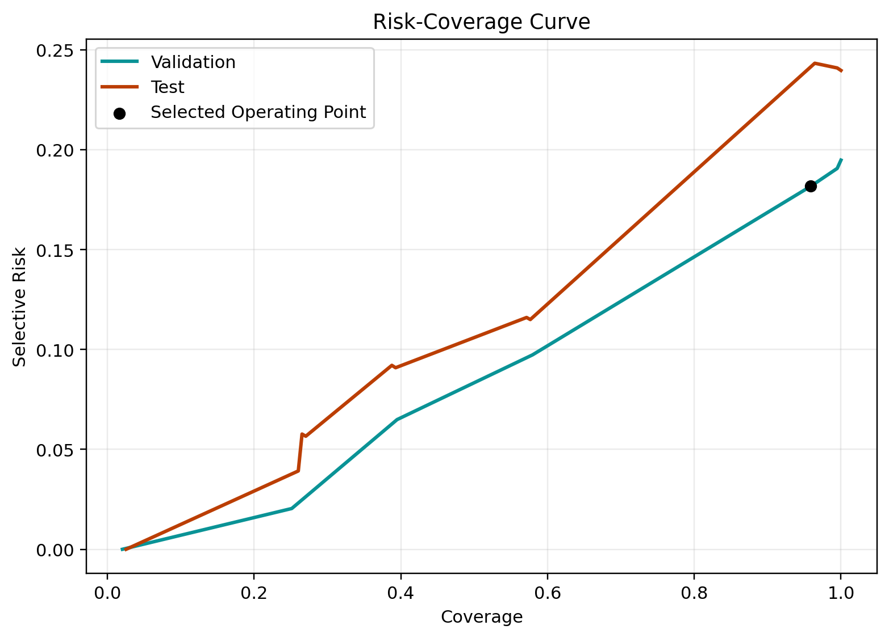
Figure 7 shows the WikiQA risk-coverage curve. The curve still trends in the right direction, but the change is smaller than on PHANTOM. This matches the weaker abstention gains on WikiQA.
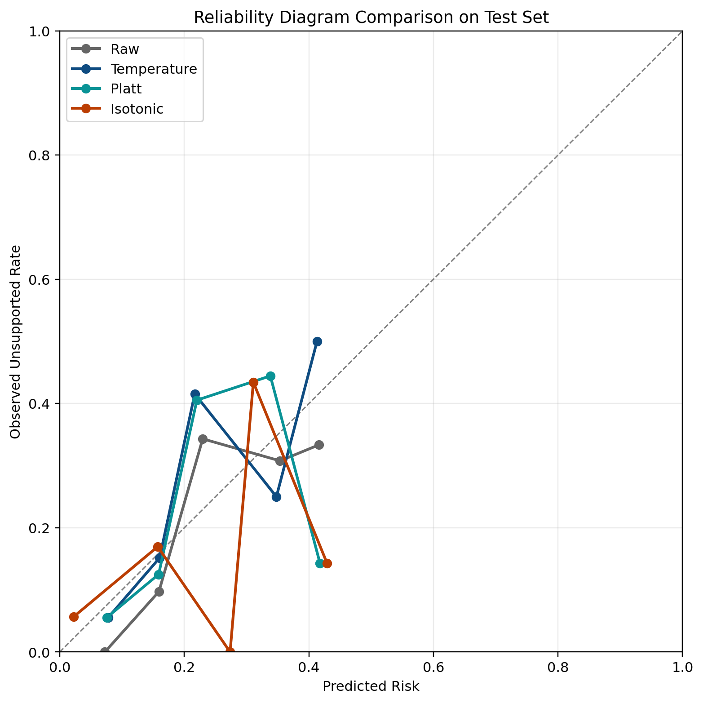
Figure 8 shows the WikiQA calibration comparison. This figure matters because it explains why the final calibrator differs by dataset. PHANTOM uses Platt scaling, but WikiQA uses isotonic regression.
We ran frozen transfer in both directions. Transfer is the main negative result, and it is important because it shows the limits of the method under dataset shift.
| Transfer Direction | AUROC | AUPRC | Accuracy | Precision | Recall | F1 | ECE | Brier | Coverage at Frozen Point | Selective Accuracy |
|---|---|---|---|---|---|---|---|---|---|---|
| PHANTOM → WikiQA | 0.3996 | 0.2020 | 0.7554 | 0.2736 | 0.1074 | 0.1543 | 0.1561 | 0.1985 | 0.9238 | 0.7960 |
| WikiQA → PHANTOM | 0.4294 | 0.2943 | 0.7049 | 0.6000 | 0.0399 | 0.0748 | 0.1659 | 0.2495 | 0.8510 | 0.7081 |
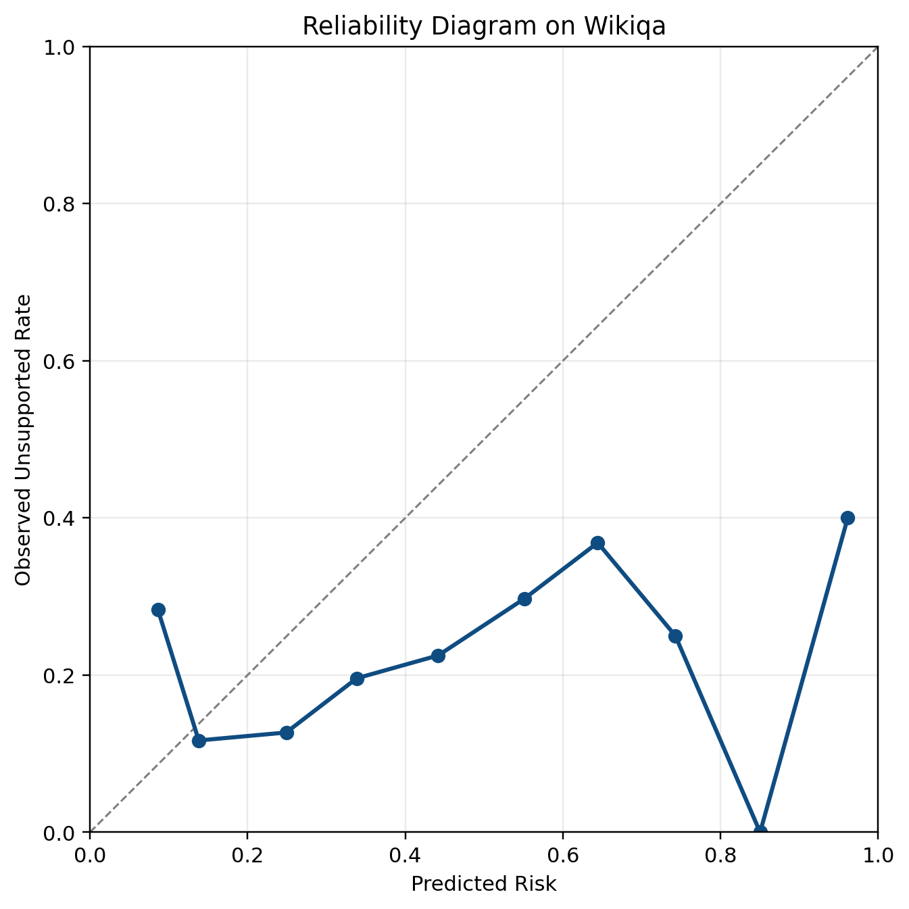
Figure 9 shows PHANTOM to WikiQA transfer. The reliability diagram is worse than the in-domain diagrams. This means the source-calibrated score is no longer behaving like a useful risk probability on the target domain.
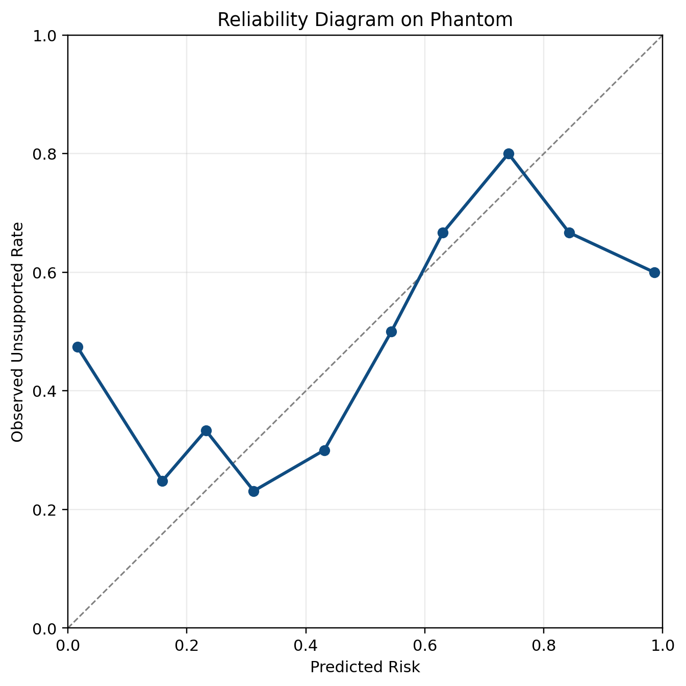
Figure 10 shows WikiQA to PHANTOM transfer. The same pattern appears in the reverse direction. This means the transfer problem is not limited to one source dataset and both directions break.
The strongest result is not only that transfer is poor. It is that we now have evidence for why transfer is poor.
First, the uncertainty features change meaning across datasets. Unsupported minus supported feature deltas on PHANTOM are:
On WikiQA, the same deltas are:
This means three uncertainty signals flip direction across datasets, while groundedness keeps the same direction. That is why groundedness is the most stable feature.
Second, the learned detector weights also mismatch. The PHANTOM detector puts positive weight on token uncertainty, self-consistency disagreement, and semantic entropy, with a negative weight on groundedness. The WikiQA detector keeps groundedness negative and self-consistency mildly positive, but token uncertainty and semantic entropy flip sign. So the detector does not just need a different threshold on the new dataset. It often needs different feature directions.
Third, ranking already fails before thresholding. In transfer, raw AUROC falls below 0.45 in both directions. Calibration then gets worse on top of that. In both transfer directions, the calibrated ECE and Brier score are worse than the raw transferred values. So the failure is not just bad threshold selection. Ranking breaks first, then calibration also breaks.
This also answers an important question. The transfer errors come from both the hallucination detector and calibration shift. The detector issue appears first, because the raw transferred scores already rank target examples poorly. Calibration shift then adds a second problem, because source-side calibration does not stay well aligned on the target dataset.
Finally, many unsupported target examples still pass below the frozen source threshold. In the deeper diagnostics, about 90.4% of unsupported WikiQA target cases remain below the frozen PHANTOM threshold, and about 83.1% of unsupported PHANTOM target cases remain below the frozen WikiQA threshold. This is a concrete transfer-time version of the confidently wrong problem.
We built the feature extraction system, trained standalone detectors for PHANTOM and WikiQA, compared calibration methods, froze abstention rules, and evaluated transfer in both directions. The takeaway is: combining uncertainty and groundedness works in-domain, especially on PHANTOM, but transfer across evidence regimes fails because the meaning of several uncertainty features changes across datasets. The most promising future work is lightweight domain adaptation, stronger qualitative failure analysis, and feature designs that preserve signal meaning across regimes more reliably.